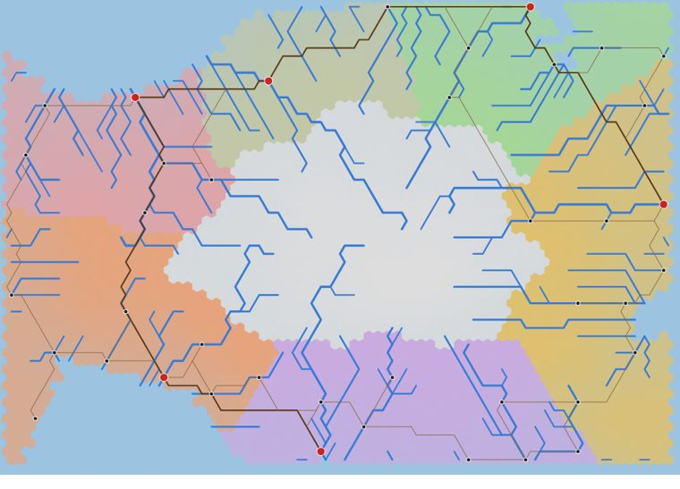

Azgaarの借りる部品: 入力と出力の表(ソースを読んだ結果)
概要: Azgaar(MIT)のソースと設計書(docs/architecture)を読み、借りる候補の川・道・国境が「何を受け取り、何を返すか」を表にした。動かした実測ではなく、読んだ結果。読んで分からない所だけを、あとで動かして確かめる。(2026-11-16)
設計書は存在する: data-model.md(データの全項目)、generation-pipeline.md(生成の順序)、module-guide.md。以前「確認していない」と答えたのは誤りだった。
1. 生成の順序(設計書より)
…降水 → 区画の作り直し → 川 → 生物区 → … → 文化 → 街 → 国 → 道 → … → 経済 → 軍。
道は、街と国のあとに作られる。つまり道は街の位置を入力にする。
2. 部品ごとの入力と出力
| 部品 | 入力(読むデータ) | 出力(作るデータ) | 注意 |
|---|---|---|---|
| 川 Rivers.generate (約1000行) | マスの標高・位置・隣接、降水(grid.cells.prec)、地物(島・湖) | 川の一覧(pack.rivers)、マスごとの川番号・水量・合流量(cells.r / fl / conf) | くぼ地の処理で、標高を一部書き換える。降水が先に要る(気温・降水の段も)。単独で14段まで動かすのは実測済み(約0.5秒) |
| 道 Routes.generate (約1100行) | マスの標高・生物区・位置・隣接・街番号・入り江(haven)・距離場・川番号、生物区の住みやすさ、街の一覧(マス・座標・首都か・港か・島番号)、川(航行できるか・流路)、気温 | 道の一覧(pack.routes: 種類・通るマス・座標)、マスどうしのつながり(cells.routes) | 街が入力なので、街の配置は自作側から渡せる。費用は「距離×住みやすさ×標高×(既存の道なら半分)×(街のマス以外は3倍)」。道に名前を付ける処理が同居(使わない) |
| 国境 States.expandStates + normalize (約90行) | マスの隣接・文化・住みやすさ得点(cells.s)・標高・生物区・地物・川・距離場、国の中心・文化・型・拡張力、首都の街、文化の中心、成長率の設定 | マスごとの国番号(cells.state)、街ごとの国番号 | 文化と「住みやすさ得点」が入力に要る。States モジュールは財政・外交・遠征まで含む約1760行で、国境の部分だけが約90行。借りるのはその部分だけ |
3. 読んで分かったこと
- 道は街から、国境は文化と首都から決まる。街・文化・首都を作る側(自作)が、先に要る。
- 川は地形だけで決まるので、最も独立している。道と国境は、街・文化のデータを受け取る形にすれば借りられる見込み。
- Azgaarの内部は、
pack(区画データ)を全部が共有する作りで、部品がpack の決まった項目を読み書きする。借りるなら、同じ項目名・形のデータを用意して渡すのが最短。(要検証)
4. 国境の部品が読む項目の全部(読んで確定。「暗黙」ではなく、コードに書いてある)
| 読む項目 | その項目を作る段 |
|---|---|
| マスの隣接(c)・標高(h)・距離場(t)・地物番号(f) | 格子・標高・地物の段(自作側の地形) |
| 川番号(r)・水量(fl) | 川の段 |
| 生物区(biome)、生物区ごとの移動費用(biomes[].cost) | 生物区の段 |
| 住みやすさ得点(cells.s) | PopulationModule.rankCells。生物区の住みやすさ・水量・合流量・標高・海岸・入り江・港・面積・資源(good)から計算する |
| 文化番号(cells.culture)、文化の中心(cultures[].center)、文化の型(type) | 文化の段(CulturesModule) |
| 国の元になる首都の街(burg.i / capital / name / cell / culture) | 街の段(自作側が渡す) |
| 設定: 成長率・大きさのばらつき(options.generation.states) | 設定値 |
| 乱数(Math.random を種つきに差し替えて使う) | 生成の最初に種を設定 |
国の「名前」と「紋章」(Names / Emblems)は国の作成時に呼ばれるが、国境の計算には関係しない。使わなければ外せる。
結論: 国境を借りるには、文化と住みやすさ得点をこちらで用意する必要がある。住みやすさ得点は計算式(約40行)で、生物区・川・標高・海岸から作れる。文化は「どの文化がどのマスか」を表す番号で、自作側の人口・民族のデータから作れる。
5. まだ確かめていない所
- 道の部品が、街の「入り江(haven)」「港」の項目を、自作の配置から得られない場合にどうなるか(コードでは、港のマスは入り江の水マスからしか海に出られない)。
- 区画の作り(Voronoi)を、こちらのハニカム方式と合わせるか、区画のまま使って変換するか。
6. 自作の最小版を書いた(2026-11-16)
場所: sekai-hex/design/mapparts/mapparts.js(約330行)と、確認用 test_mapparts.js。元のロジックを読んで、自分のデータの形(g.nb[i]=隣のマス、g.h=標高 など)で書き直した。Azgaarの pack/grid は使わない。ファイルの先頭にAzgaarの著作権表示とMITライセンス全文を付けた。
| 部品 | 写したロジック | 省いた物 |
|---|---|---|
| 国境 | 首都から費用順に同時に広げる処理。費用=文化・人口の元・生物群系・標高・川・海岸の表(型ごとの例外も)。広がりの上限。飛び地やギザギザをならす処理 | 固定(lock)された国。湖の特例は、g.lake があれば使う形で残した |
| 道 | Urquhart網(三角形分割から各三角形の最長辺を除く)。陸路の費用(距離の2乗×住みやすさ×標高×既存道は半額×街以外は3倍)。費用つき最短経路。既存の道に乗った所で区間を分ける。幹線=首都どうし、小道=全ての街 | 海路(港と入り江の持ち方を設計で決めてから)。川の蛇行の幾何。三角形分割はライブラリを使わず自作(Bowyer-Watson) |
| 川 | 標高のなめ。くぼ地埋め(元の反復式)。高い所から降水を流して流量を集める。流量30以上で川。合流は流量の多い方が本流。3マス未満は捨てる。合流点の流量 | 湖の出口・流入。下刻(川が標高を削る)。蛇行・幅・名前。くぼ地埋めの高速化(後で差し替え) |
動作確認(小さな仮の六角地図 70×56=3,920マス、街40・国6)
目的: 3部品が、六角格子の隣接でそのまま動き、数が合うかを見る。 結果: 検査14項目すべて合格。所要は川17ms・国境18ms・道44ms。
- 川: すべて下る一方、海・縁・他の川のいずれかで終わる。水の上に引かれない。
- 国境: 首都は自国。飛び地0。平地・丘で無所属0。高山(標高67以上)は費用が大きく国境の外に残る(元の規則でも同じ性質)。
- 道: 同じ陸地の首都どうし、街どうしがすべてつながる。道は陸だけを通る。Urquhart網の辺数は 40点で44辺。

確認図: 色=国、太い茶線=幹線(赤丸=首都)、細い茶線=小道、青線=川。灰色の中央は国境の外に残った高山。
わかっていないこと(正直に)
- Azgaar本体の出力との比較はしていない。確かめたのは「性質」(下る・つながる・陸だけ…)だけで、同じ入力で同じ結果になるかは未確認。
- 国境の広がりの上限はマス数に比例する。マス数が少ないと高山に届かない。本番のマス数に合わせた設定は設計で決める。
- テストの標高・降水・文化・街は、確認用の仮の作り(自作側の本番の作りではない)。
- 残っていた2点のうち、「ハニカムとの対応」は、隣接の配列だけで動くので問題にならない見込み(確認済み)。「港と入り江」は海路を作る時に決める。
次: 街の配置の手順(街・城・砦・港・施設)を設計案にする。国境・道・川の自作版は、本番の地形で動かして見た目を確かめる。